Home ／ 第3回
LESSON 03 ／ 作るフェーズ
モックを作る ― 裏側を作らずに、画面を先に作って整える
～ 仕様書の画面一覧から見た目だけの画面を作り、崩れ → テイスト → 細部 の順にブラッシュアップする ～
- Claude デスクトップアプリを使います
- 成果物：app/ の中の HTML と style.css
- 保存や計算の処理はまだ作りません
- 保存の仕組みは使わず、ファイルを開くだけで見られます

01
モックとは
モック＝見た目だけを作った画面です。ボタンを押しても何も起きず、保存も計算もしません。画面に何をどこに置くかを、実物の画面で確かめるために作ります。 この回で作るのは、ブラウザで開ける HTML と CSS のファイルだけです。画面が先に固まっていれば、あとの作業はすべてその画面の上で確かめられます。
 用語
用語
- モック
- 見た目だけを作った画面。動きや保存の仕組みは入っていません。
- HTML
- 画面に「何を」置くかを書くファイル。見出し・入力欄・ボタン・一覧などの並びを決めます。ファイル名の最後が
.htmlになります。 - CSS
- 画面の「見た目」を書くファイル。色・文字の大きさ・余白・角の丸み・要素の配置を決めます。ファイル名の最後が
.cssになります。 - JavaScript
- 画面に「動き」を付けるプログラム。ボタンを押したときの処理、入力の確認、データの送受信などを書きます。この回では使いません。
- 裏側の処理
- 保存・計算・データの読み書きのように、画面の裏で動く仕組み。この回では作りません。
- ブラッシュアップ
- 一度できたものを、見て・直して、少しずつ良くしていく作業。
- 崩れ
- 文字のはみ出し・重なり・ずれ、幅を変えたときの折れなど、意図と違う見た目になっていること。
- テイスト
- 見た目の方向性。色・文字・余白・角の丸みなど、画面全体に共通する印象のこと。
なぜ裏側より先に画面を作るのか
- 画面は目で見て確かめられます。裏側の処理は、動かして初めて合っているか分かります。先に画面があれば、あとから足す処理をすべてその画面の上で確かめられます
- 仕様書に書いた画面一覧と、実物の画面のずれに、作り込む前に気づけます。裏側まで作ったあとで画面を変えると、裏側も直すことになります
- 「何ができたら終わりか」が目に見えます。モックの見た目が完成の姿なので、あとの作業はこの画面に処理を足していく形で進められます
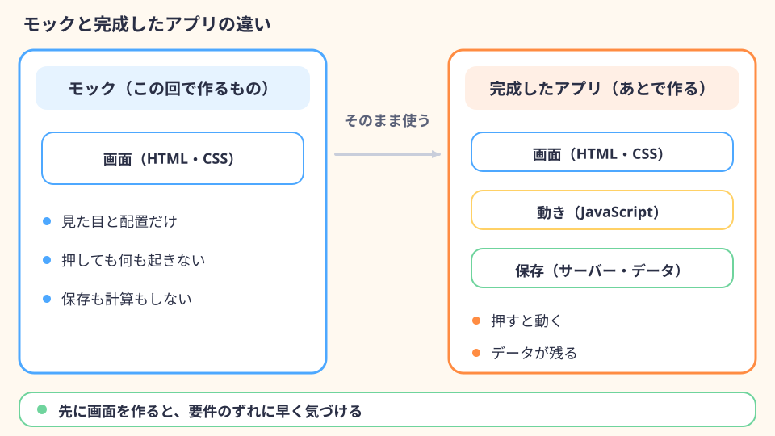
この回の流れ（上から順に進めます）
フォルダを開く
仕様書のある my-app
指示①
モックを作らせる
ブラウザで開く
ダブルクリックで表示
崩れを見る
幅を変えて確かめる
指示②
テイストを決める
指示③
細部を1つずつ
見直す
仕様書と揃える
02
アプリのフォルダを開いて、権限モードを「手動」にする
仕様書 docs/spec.md が入っているアプリのフォルダ（このページでは my-app。名前はご自身で付けたもの）を、Claude デスクトップアプリで開きます。
 用語
用語
- Claude デスクトップアプリ
- PC にインストールして使う Claude の公式アプリ。この中から Claude Code を呼び出します。
- Claude Code
- 指示を出すと、PC のファイルを実際に作ったり書き換えたりしてくれるツール。画面に答えを表示するだけのチャットとは別のものです。
- セッション
- Claude Code との1つの会話のまとまり。「＋ 新規」で新しく始めます。
- ワークスペース
- Claude Code が作業する場所として開いたフォルダのこと。
- docs／spec.md／tasks.md
- docs は documents（文書）の略で、文書を入れるフォルダの名前。
spec.mdは作るものを決めた仕様書、tasks.mdは作る順番の一覧です。docs/spec.mdは「docs フォルダの中の spec.md」の意味です。
- 1
Claude デスクトップアプリを起動し、画面左上の
</>（Claude Code）を押す左の一覧の上にある 「＋ 新規」 を押します。なぜ：前の会話と混ざりません。仕様書を作ったときの会話は、もう読ませなくて大丈夫です。仕様書はファイルとして残っているので、Claude Code はそれを読めます。
- 2
画面の下のフォルダ名のボタン → 「フォルダを開く…」→
my-appを選んで「開く」なぜ：ここで選んだフォルダだけが Claude Code の作業対象になります。別のフォルダのままだと、そちらにファイルができます。
- 3
入力欄の近くに「ローカル」と
my-appの2つが出ていれば開けています「ローカル」は「この PC の中で動かす」という意味です。「リモート」や「SSH」のような別の表示になっている場合は、押して「ローカル」に切り替えます。なぜ：この PC の中のフォルダを扱うには、この PC の中で動かす設定になっている必要があります。
- 4
「このワークスペースを信頼しますか？」と出たら、場所を見てから「ワークスペースを信頼」
表示されたフォルダの場所が、ご自身の
my-appであることを見てから押します。なぜ：この確認は「そのフォルダの中のファイルを Claude Code が読み書きしてよいか」を聞いています。知らないフォルダなら押さないでください。
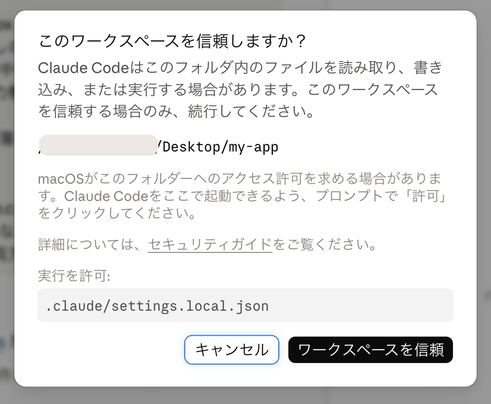
権限モードを「手動」にする
入力欄の下に、いまの権限モードの名前が出ています。ここを押すとモードの一覧が出るので、「手動」 を選びます。
 用語
用語
- 権限モード
- Claude Code がファイルの書き換えやコマンドの実行をする前に、確認を求めるかどうかの設定。「手動」は、そうした操作の前に必ず確認画面が出る設定です。「編集を受け入れる」は、ファイルの書き換えやフォルダの中のファイル操作の一部を確認なしで進める設定です。
- コマンド
- PC に文字で出す命令。Claude Code はファイルの書き換えのほかに、コマンドの実行も提案してきます。
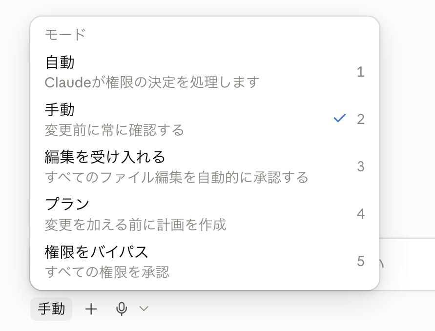
なぜ「手動」にするのか：この回は、Claude Code が実際にファイルを作る回です。「手動」なら、どのファイルに何を書こうとしているかを確認画面で見てから許可できます。「編集を受け入れる」のままだと、頼んでいないファイルまで確認なしで作られたり書き換えられたりしても気づけません。
03
指示①：仕様書の画面一覧から、モックを作らせる
Claude Code に docs/spec.md を読ませ、その「画面一覧と遷移」のとおりに画面を作らせます。次の型をそのまま入力欄に貼って送ります。画面の数や名前は仕様書から読み取らせるので、書き換える箇所はありません。
docs/spec.md を読んでください。その「画面一覧と遷移」に従って、見た目だけの画面（モック）を作ってください。 ■ 条件 - 保存・計算・データの読み書きなど、裏側の処理は作らないでください。ボタンを押しても何も起きなくて構いません - ファイルは app フォルダの中に、画面1枚につき HTML を1つ（最初の画面は app/index.html、ほかは app/edit.html のように役割が分かる名前）と、見た目をまとめる app/style.css の1つだけ。JavaScript は使わないでください - 作るのは app/ の中のファイルだけ。docs/ の中のファイルは読むだけで、書き換えないでください。すでに同じ名前のファイルがある場合は上書きせず、中身を見せて確認を待ってください - ブラウザでファイルを直接開けば表示できるようにしてください（サーバーは使わない） - 画面どうしの移動（画面一覧に書いてある「〜を押すと〜へ」）だけは、リンクで動くようにしてください - 一覧や結果の欄には、見た目を確かめるための仮のデータを3件ほど入れてください（一覧が無いアプリは、結果の欄に仮の文章を入れてください） - 保存や削除など、動かさないボタンは、押しても画面が切り替わったり読み込み直されたりしないようにしてください（入力欄の送信は起こさない） - 色や飾りはまだ付けないでください。要素の配置だけで構いません - 作り終えたら、ブラウザでの開き方を1行で教えてください
 用語
用語
- app
- application（アプリケーション）の略。画面や処理のファイルを入れるフォルダの名前で、この回で初めて作られます。
app/index.htmlは「app フォルダの中の index.html」の意味です。 - index.html
- アプリを開いたとき最初に出る画面の HTML に付ける、決まりごとの名前。あとで公開したりサーバーで動かしたりするとき、アドレスにファイル名を書かなくても最初に開かれる名前として決まっています。いま揃えておくと、そのときに直さずに済みます。ほかの画面は
edit.htmlのように役割が分かる半角英数字にします。 - リンク
- 押すと別の画面へ移る文字やボタン。HTML だけで作れるので、JavaScript が無くても画面の移動はできます。
- 仮のデータ
- 見た目を確かめるために入れておく、架空の記録。本物のデータが無いと、一覧の行がどう見えるか分かりません。
- サーバー
- 画面からの求めに応じてデータを返したり保存したりするプログラム。この回のモックは HTML と CSS だけなので、サーバーは要りません。
条件の1行ずつに理由があります
| 条件 | なぜ |
|---|---|
| 裏側の処理は作らない | 作らせると、画面の確認より先に保存や計算の動作確認が始まり、崩れの確認が後回しになります。この回は画面だけを見ます |
| HTML は画面の数だけ・CSS は1つ・JavaScript は使わない | ファイルが増えると、どれを見ればよいか分からなくなります。JavaScript が入ると「押しても動かない」が崩れなのか未完成なのか判断できなくなります |
| 作るのは app/ の中だけ。docs/ は書き換えない | 仕様書を書き換えられても気づけません。決めたことの正本は docs/spec.md に残しておきます |
| ブラウザで直接開ける | サーバーも Node.js も要りません。ダブルクリックだけで確かめられます |
| 画面の移動だけはリンクで動かす | 画面が2枚以上あるとき、行き来できないと画面2の見た目を確かめに行けません |
| 仮のデータを3件ほど | 一覧や結果の欄が空だと、行の見た目・区切り・文字の揃え方が確かめられません |
| 動かさないボタンは、押しても画面が切り替わらない | HTML の入力欄のまとまりは、ボタンを押すと内容を送って画面を読み込み直す動きが最初から付いています。止めておかないと「押したら画面が変わった」が崩れなのか未完成なのか分からなくなります |
| 色や飾りはまだ付けない | 先に色を付けると、配置の崩れが色に隠れて見えなくなります。配置を決めてから色を当てます |
| 開き方を聞く | 作ったファイルを自分で開けないと、確かめようがありません |
表は横にスクロールできます
画面の数と名前は仕様書に合わせて作られます。画面が3枚なら HTML も3つです。ファイル名は index.html 以外は自由ですが、小文字の半角英数字とハイフン（アンダースコアも可）だけにします。なぜ：日本語やスペースが入った名前は、開発の道具の一部で扱いが難しくなります。日本語の名前が付いていたら、「ファイル名を半角英数字に変えてください」と頼みます。
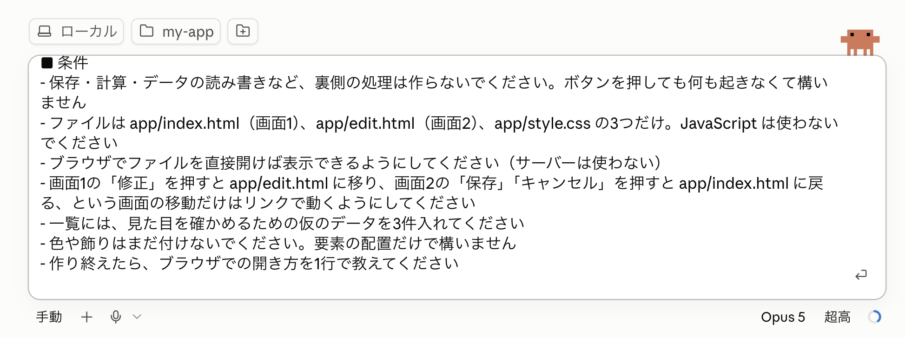
送ると、Claude Code は docs/spec.md を読み、ファイルを1つずつ作ります。「手動」なので、ファイルごとに「書き込みを許可しますか？」の確認画面が出ます。ファイルの場所が my-app/app/ の中であることと、中身に、自分が仕様書で決めた見出しや入力欄の名前（「今月の合計」「金額」など）が日本語で出てくることを見てから「一度だけ許可」を押します（確認画面の実物は 指示②・指示③ の節にあります）。app フォルダを作るコマンド（mkdir app のように出ます）の許可を求められることもあります。これは頼んだ作業の一部なので許可します。
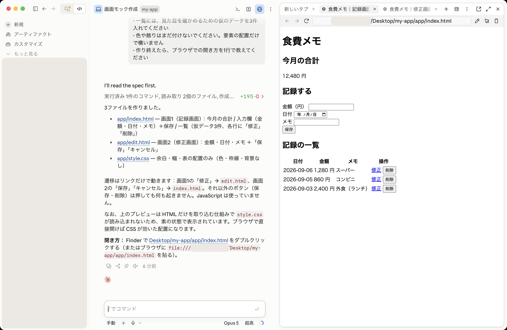
style.css が読み込まれていなかったりします。最終の確認は必ずご自身のブラウザで開いて行います（次の節）。
04
ブラウザで開いて、崩れていないかを見る
開き方：Finder（Windows はエクスプローラー）で my-app → app → index.html をダブルクリックします。ブラウザが立ち上がり、モックが表示されます。
 用語
用語
- ブラウザ
- Safari や Chrome など、Web ページを見るソフト。HTML ファイルをそのまま開けます。
- Node.js
- JavaScript をブラウザの外（PC の上）で動かすための土台のソフト。サーバーを作るときなどに使います。この回では使いません。HTML と CSS だけの画面は、Node.js もサーバーも無しでブラウザが表示できます。
なぜサーバー無しで開けるのか：ブラウザは HTML ファイルを直接読んで画面にします。保存や計算の処理が無い今の状態では、ファイルを開くだけで十分です。あとで裏側の処理を足すときに初めて、サーバーが要るかどうかを考えます。
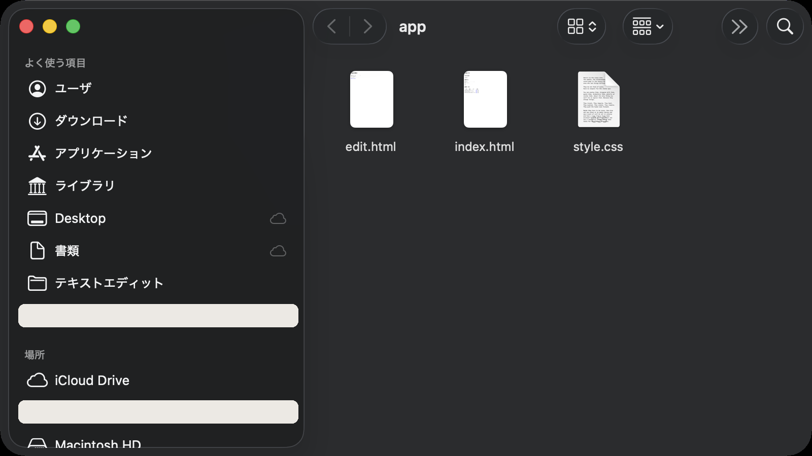
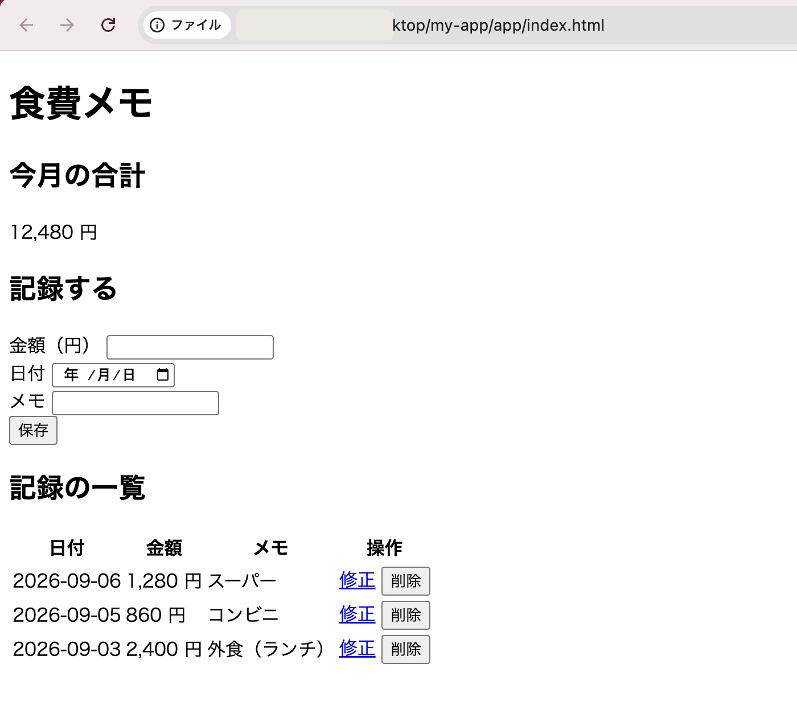
- ダブルクリックで別のソフト（エディタなど）が開いた場合は、ファイルを右クリック → 「このアプリケーションで開く」（Windows は「プログラムから開く」）→ ブラウザを選びます。ブラウザの窓にファイルをドラッグしても開けます。なぜ：ダブルクリックでどのソフトが開くかは PC の設定で決まっていて、HTML ファイルにエディタが割り当てられていることがあります
- 画面1の「修正」を押して画面2に移り、「キャンセル」で戻れるかを見ます。画面の移動以外のボタン（画面1の「保存」、一覧の「削除」など）は、押しても何も起きないのが正しい状態です。画面2の「保存」は、リンクとして画面1に戻るだけで、内容は保存されません
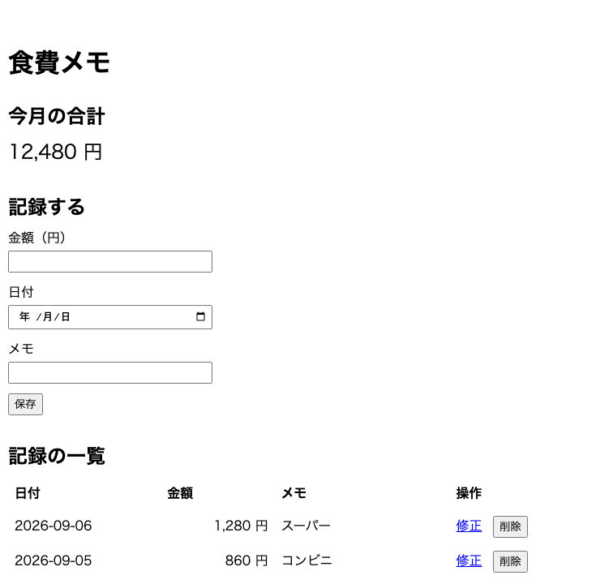
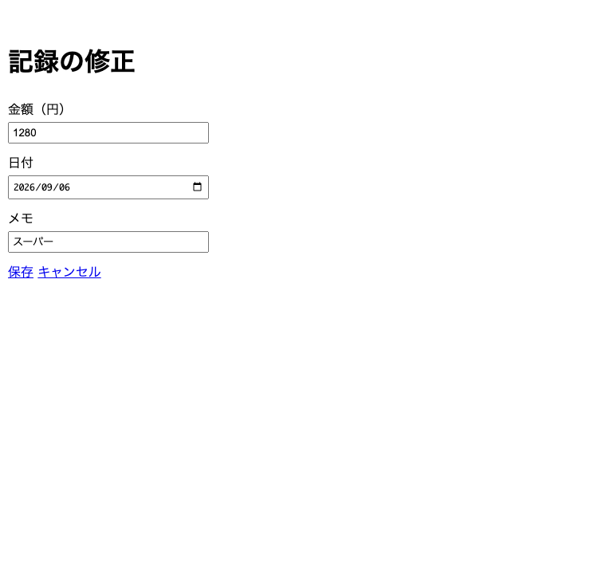
崩れを見る5つの点
1つずつ、画面を見ながら確かめます。
- 仕様書の要素が全部あるか
- 見方
docs/spec.mdの「画面一覧と遷移」を横に開き、画面ごとに置くものを1つずつ指で追います - なぜ抜けは、あとで裏側の処理を足すときに「入れる場所が無い」という形で出てきます。余分な要素は AI が足したものです。仕様書に「作らない」と書いた機能のボタンが混じっていないかも見ます
- 文字がはみ出していないか・重なっていないか
- 見方見出し・入力欄の名前・一覧の文字を見ます
- なぜはみ出しは、文字が長くなる本物のデータで悪化します
- 幅を変えても崩れないか
- 見方ブラウザの窓の右端をつかんで、狭くしたり広くしたりします
- なぜ自分ひとりで使うものでも、窓を小さくしたまま開いたり、別の PC や大きい画面で開いたりします。そのときに一覧の文字が折れたり、ボタンが見切れたりします
- 画面の移動が動くか
- 見方「修正」→ 画面2 → 「キャンセル」→ 画面1
- なぜ移動できないと、画面2の見た目を確かめに行けません
- 仮のデータが表示されているか
- 見方一覧に3件あるか
- なぜ空だと行の見た目が確かめられません
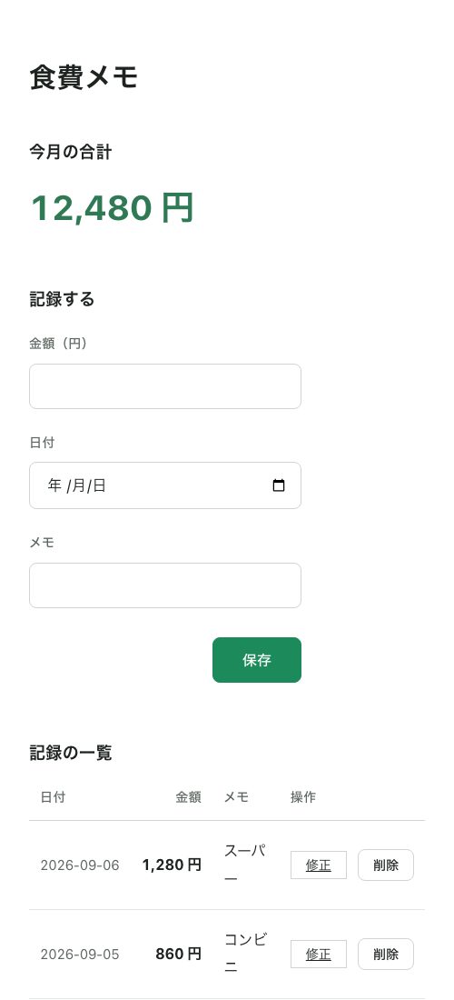
崩れがあったら、その場で直させる
直したい箇所を1つ決め、次の型で送ります。スクリーンショットを撮って、入力欄に貼ります。Mac は ⌃⇧⌘4（コントロールも一緒に押す）で範囲を選んで撮ると画像がクリップボードに入るので、入力欄で ⌘V を押すと貼れます。⇧⌘4 で撮った場合はデスクトップに画像ファイルができるので、そのファイルを入力欄にドラッグします。Windows は Windows＋Shift＋S で撮って Ctrl+V で貼ります。貼る前に、名前・メールアドレス・業務の実データなど、外に出せないものが写っていないかを見ます。写っていたら、範囲を絞って撮り直します。なぜ：貼った画像は AI のサービスに送られます。
画面1の一覧で、メモ欄が狭すぎて文字が1文字ずつ折り返されています（スクショを添付）。 メモ欄の幅を広げて、2行までに収まるようにしてください。 変更は app/style.css だけ。HTML と文言は変えないでください。文字を小さくしたり、内容を隠したりして逃げないでください。ほかは触らないでください。
なぜスクショを貼るのか：崩れを言葉にすると、どこがどう崩れているかが伝わりません。「一覧が変」では AI は別の場所を直します。画面そのものを見せれば、どの要素の話かが一致します。
 ブラッシュアップは「崩れ → テイスト → 細部」の順に進めます。ここではまだ色や飾りは直しません。
順番を逆にして先に細部を直すと、テイストを変えたときに全体の余白や色が動き、直した細部がやり直しになります。
ブラッシュアップは「崩れ → テイスト → 細部」の順に進めます。ここではまだ色や飾りは直しません。
順番を逆にして先に細部を直すと、テイストを変えたときに全体の余白や色が動き、直した細部がやり直しになります。
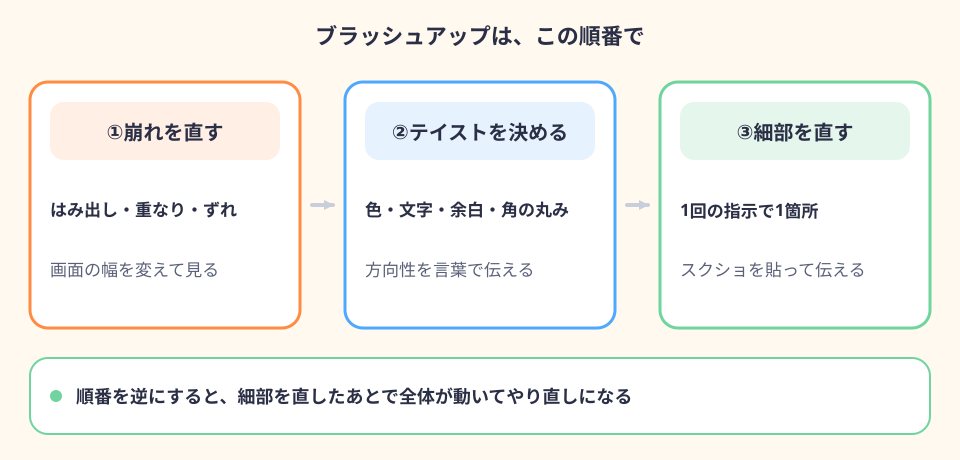
05
指示②：テイストを決める
テイスト＝見た目の方向性です。色・文字の大きさ・余白・角の丸みをまとめて指します。配置が崩れていない状態になったら、テイストを言葉で伝えて、style.css だけを書き換えさせます。
 用語
用語
- テイスト
- 見た目の方向性。色・文字・余白・角の丸みなど、画面全体に共通する印象のことです。
- アクセントカラー
- 画面の中で強調に使う色。白地に1色だけ使うと、ボタンや合計金額に目が行きます。
- px
- ピクセル。画面上の大きさの単位。文字の大きさを 16px のように指定します。
- 余白
- 要素と要素のあいだ、画面の端と内容のあいだの空き。狭いと詰まって読みにくくなります。
方向性を決める5つ
ご自身のアプリに合わせて言葉にします。決められないときは、下の例（落ち着いた色・白地・緑1色）をそのまま使って構いません。
- 全体の色
- 例落ち着いた色。地は白、アクセントは緑系を1色だけ
- なぜ言葉にするのか決めないと AI が色を何色も使い、画面ごとに印象が変わります
- 文字
- 例本文は 16px 以上、見出しは太く、行間は広め
- なぜ言葉にするのか小さい文字は読み飛ばしの元です。数字で言えば揃います
- 余白
- 例要素の間隔を広めに。左右にも余白を取り、内容は中央に寄せる
- なぜ言葉にするのか余白の指定が無いと、要素が左上に寄った詰まった画面になります
- 角
- 例ボタンと入力欄は少し丸く。ボタンは押せると分かる見た目に
- なぜ言葉にするのか押せる場所が分からないと、使う人が迷います
- 一覧
- 例1行ごとに薄い区切り線。金額は右揃え（一覧が無いアプリは、結果の欄や入力欄の見せ方に読み替えます）
- なぜ言葉にするのか数字は右で揃えると桁が比べられます
テイストを当てる指示の型
指示①と同じセッションで、続けて送ります。
app の見た目の方向性（テイスト）を整えてください。裏側の処理は引き続き作らないでください。 ■ 方向性 - 全体：（落ち着いた色。地は白、アクセントは緑系を1色だけ） - 文字：（本文は 16px 以上、見出しは太く。行間は広め） - 余白：（要素どうしの間隔を広めに。画面の左右にも余白を取り、内容は中央に寄せる） - 角：（ボタンと入力欄は少し丸く。ボタンは押せると分かる見た目に） - 一覧：（1行ごとに薄い区切り線。金額は右揃え） ■ 条件 - 変更は app/style.css だけ。HTML の構造（要素の並びや文言）は変えないでください - （画面1と画面2）の両方に同じテイストを当ててください
なぜ style.css だけを変えさせるのか：HTML を変えると、前の節で確かめた配置がまた変わり、崩れの確認をやり直すことになります。見た目は CSS だけで変えられるので、HTML には触らせません。
送ると style.css の書き込みの確認画面が出ます。場所が my-app/app/style.css であること、中身が色や文字の指定であることを見てから「一度だけ許可」を押します。
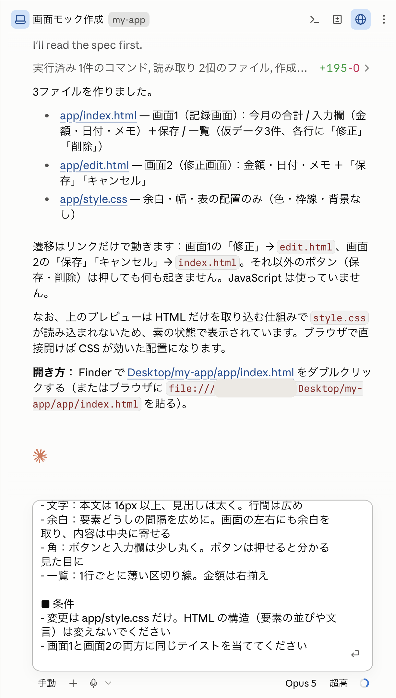
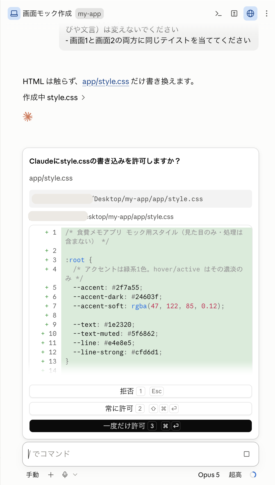
 頼んでいない作業は断ってください。この例では、
頼んでいない作業は断ってください。この例では、style.css を書いたあとに Claude Code が、英語で Create preview copies with inlined CSS（プレビュー用のコピーを作る）と書かれたコマンドの実行を求めてきました。指示に無い作業なので 「拒否」 を押しています。拒否しても、頼んだ style.css の変更はそのまま残ります。
なぜ断るのか：頼んでいないファイルが増えると、どれが本物か分からなくなります。何をするコマンドか読んで分からないものは、通しません。
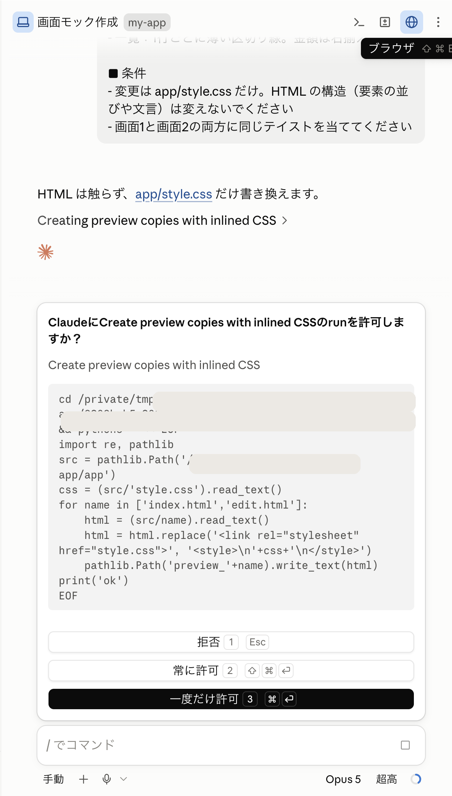
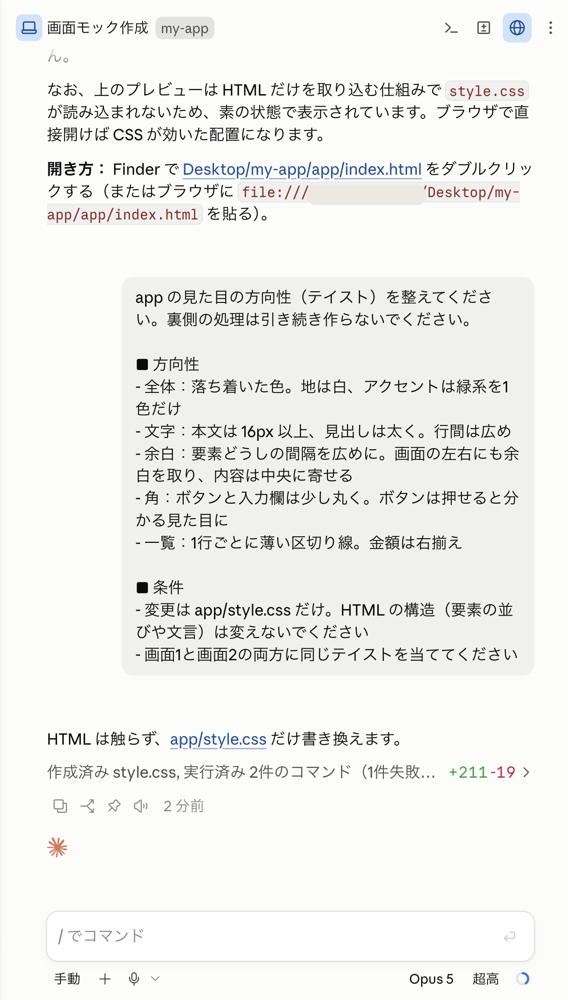
ブラウザで開き直して見る
開いたままのブラウザは、再読み込みすると新しい見た目になります（Mac は ⌘R、Windows は F5）。なぜ：ブラウザは前に読んだファイルを表示し続けています。読み直させないと、直したはずなのに変わらないように見えます。
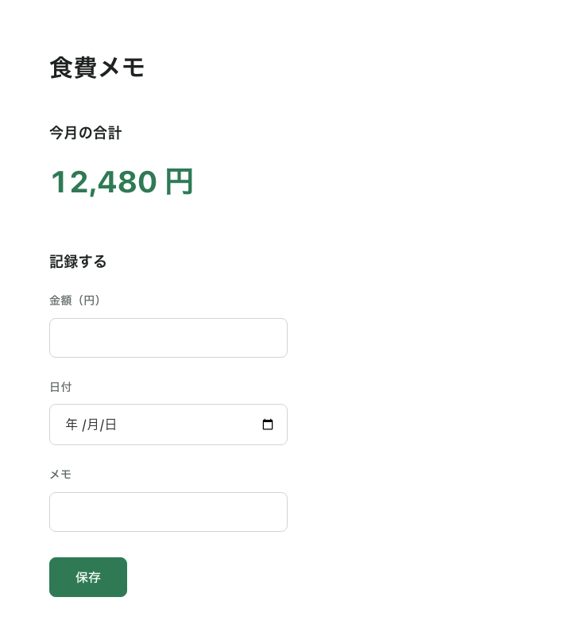
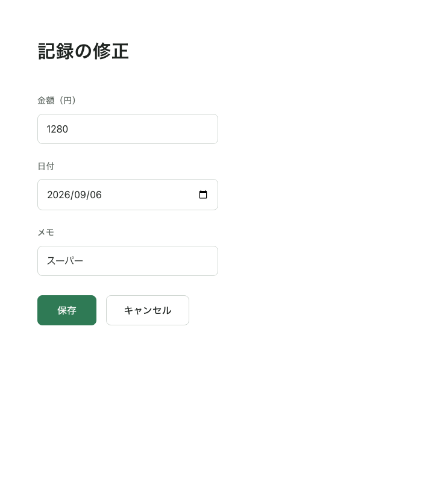
テイストを当てたら、「崩れを見る5つの点」をもう一度通します。色や余白が変わると、幅を狭めたときの折れ方も変わります。
06
指示③：細部を1つずつ直す
テイストが決まったら、気になるところを 1回の指示で1点だけ 直していきます。
なぜ1点ずつなのか：まとめて頼むと、どの指示でどこが変わったか分からなくなります。気に入らない変更だけを戻したいとき、1点ずつなら「さっきの1点を戻して」で済みます。
細部の例：ボタンの位置と目立たせ方／文字の大きさ／一覧の列の幅／余白の広さ／区切り線の濃さ。文言や要素の並びを変えたいときは HTML も直すことになるので、そのむねを指示に書きます。
細かい所を1つずつ直します。次の1点だけ直してください。ほかは触らないでください。 変更は app/style.css だけ。HTML は変えないでください（HTML を変えないと直せない場合は、直す前に教えてください）。 - （「保存」ボタンを入力欄の右下に寄せて、ほかのボタンより目立つ色にする（画面1・画面2の両方））
「ほかは触らないでください」を毎回入れる理由：この一言が無いと、AI は頼んだ1点のついでに周りも整え始めます。整えた結果が良くても、何が変わったか把握できなくなります。上の例は位置と色の2つを書いていますが、どちらも「保存を目立たせる」という1つの目的なのでまとめています。目的が別のものは、別の指示に分けます。
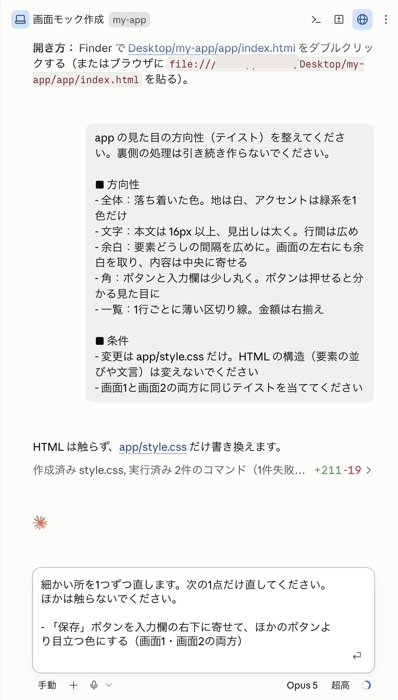
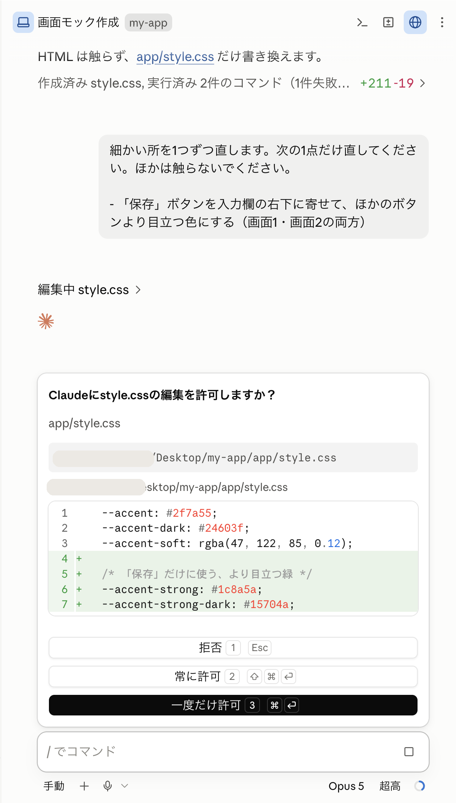
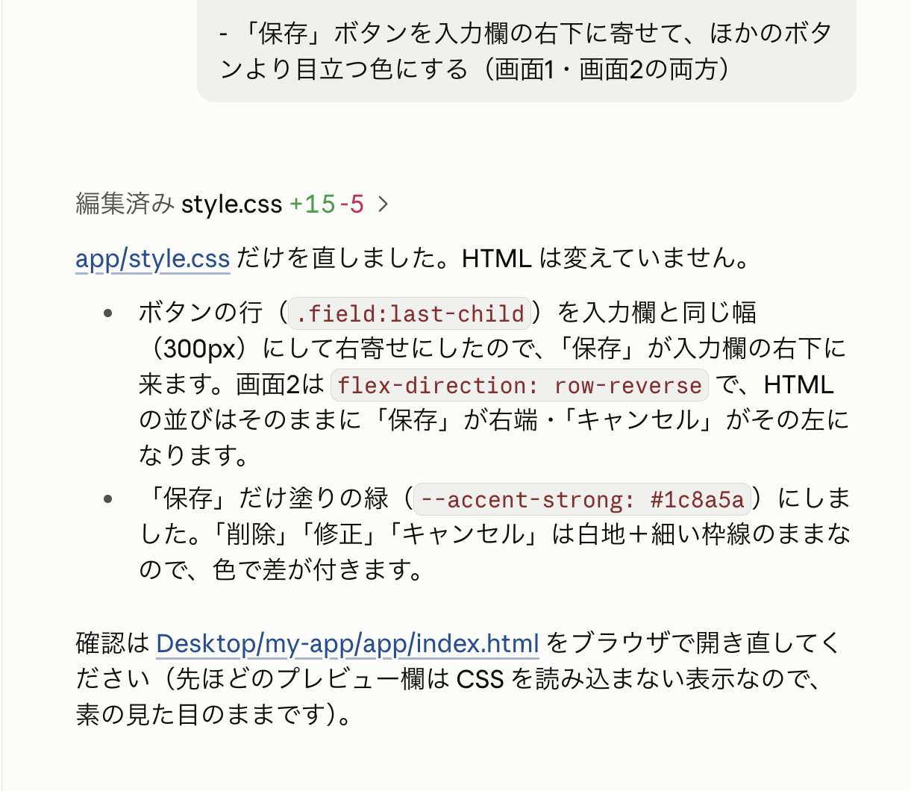
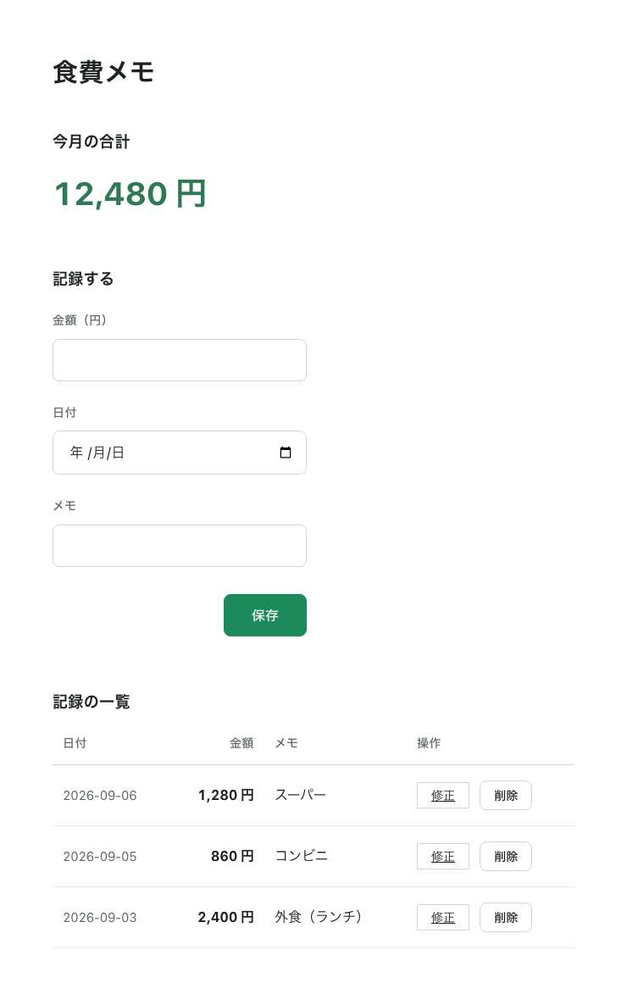
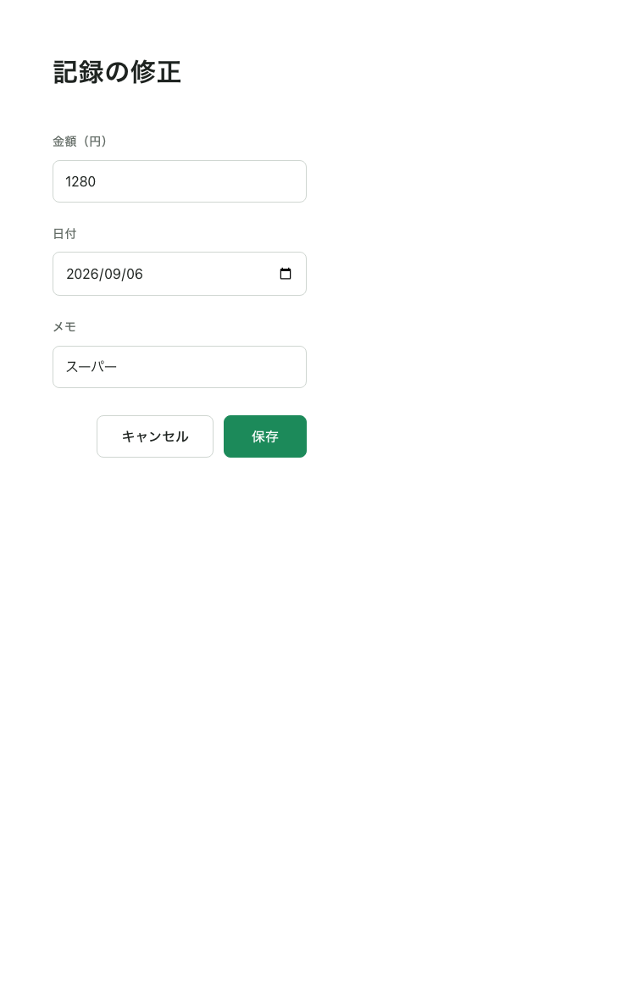
直したら、ブラウザを再読み込みして見ます。気になる点が残っていれば、また1点だけ頼みます。言葉にしにくい細部は、スクショに印を付けて貼ります（Mac の「プレビュー」、Windows の「Snipping Tool」（以前の「切り取り＆スケッチ」）で丸や矢印を描けます。アプリの名前は更新で変わることがあります）。
直した1点と、その理由は、そのつどメモに書き残します。この回の提出物になります。
07
見直して、仕様書と揃える
ブラッシュアップを終えたら、次の3つを見ます。
- 1
「崩れを見る5つの点」をもう一度通す
細部を直したあとで幅を変えたら折れる、はよく起きます。
- 2
仕様書の画面一覧と、実物の画面を見比べる
ブラッシュアップの途中で、要素の名前や並びが変わっている場合があります。まず Claude Code に「
docs/spec.mdの画面一覧と遷移と、いまのapp/の画面で違うところを一覧にしてください。まだ何も変えないでください」と頼み、出てきた違いを1つずつ、画面を仕様書に戻すか、自分が採用した変更として仕様書を直すかを決めます。決めていない変更は、画面を仕様書に戻します。採用した変更だけ「docs/spec.mdの画面一覧と遷移の〜を、〜に直してください。ほかの項目は変えないでください」と頼みます。なぜ：仕様書と画面が食い違ったままだと、あとで裏側の処理を足すとき、AI がどちらを正としてよいか分からなくなります。AI が勝手に変えた画面を仕様にしてしまうと、決めた「やること」「やらないこと」がずれます。 - 3
裏側の処理は作っていないことを確かめる
画面1の「保存」を押しても一覧に記録が増えない、ブラウザを閉じて開き直しても記録が増えていない、が正しい状態です（画面2の「保存」「キャンセル」は、リンクとして画面1に戻るだけです）。保存や計算が動いていたら、Claude Code が頼んでいない処理を足しています。「JavaScript や保存の処理は入れないでください。入っていたら外して、作ったファイルの一覧を教えてください」と頼みます。作る順番
docs/tasks.mdを作ってある方は、画面を作るタスクの先頭を- [x]（終わった印）に変えておきます。
ここで作った画面は、あとで裏側の処理を足すときにそのまま使います。モックは捨てるものではありません。
だから、この回の時点で「自分が毎回使いたい画面」になっているかを見ておいてください。
Deliverables
この回で作るもの
終わったとき、手元に次の3つがある状態にします。この回の課題の内容は commmune のゼミスレッドでご案内し、提出は「ゼミ参加者向け 事前課題提出受付フォーム」から開催3日前までにお願いします（Home の「ゼミのルール・修了要件」）。演習サイト Boarding Pass の理解度チェックもあります。
 用語
用語
- commmune
- DMM 生成AI CAMP の受講生向けコミュニティサイト。ゼミごとのスレッドで課題や連絡を案内します。
app/ の中の HTML と style.css
画面の数だけ HTML（例：index.html・edit.html）と、見た目をまとめた style.css。ブラウザでダブルクリックして開ける状態。
前と後のスクリーンショット
ブラッシュアップ前（色を付ける前）と後の画面を、画面ごとに1枚ずつ。アプリのフォルダの中に shots フォルダを作って入れておくと迷いません（例：shots/before-index.png）。何がどう変わったかを見せるためのものです。
自分の判断で直した点のメモ
何を、なぜ直したか。指示③で1点ずつ頼んだ内容と、その理由を書き残します。
Pitfalls
よくあるつまずきと対処
詰まったら、Home の「分からないことが出てきたらこの順番で」の順（スクショを撮って AI に聞く → ゼミ掲示板）で進めてください。
ブラウザで開いても色が付かない・素の状態で出る
style.css が読み込まれていません。
対処：style.css が index.html と同じ app フォルダにあるか見ます。無ければ「app/style.css が読み込まれていません。直してください」と頼みます。アプリの中のプレビュー欄で見ている場合は、ご自身のブラウザで開き直してください。
ダブルクリックでブラウザ以外のソフトが開く
エディタで中身の文字が出ます。
対処：右クリック → 「このアプリケーションで開く」（Windows は「プログラムから開く」）→ ブラウザ。または、ブラウザの窓にファイルをドラッグします。
指示のたびに画面の構成が変わる
崩れの確認をやり直しになります。
対処：「HTML の構造は変えない」「ほかは触らない」を毎回入れます。
Claude Code が JavaScript や保存の処理を作り始めた
ボタンが動き、裏側ができてしまいます。
対処：確認画面で「拒否」。指示に「裏側の処理は作らない」「JavaScript は使わない」を戻します。
頼んでいないコマンドの許可を求められた
何をするか分からないまま通してしまいます。
対処：内容を読みます。頼んでいない・分からないなら「拒否」。頼んだ作業の結果は残っています。
何を直したいか言葉にできない
指示が曖昧で、別の場所が直ります。
対処：スクショに丸や矢印を付けて貼ります。
細部を先に直して、テイストで全部変わった
直した細部がやり直しになります。
対処：「崩れ → テイスト → 細部」の順に戻ります。今回は1回分のやり直しで済みます。
直したのにブラウザが変わらない
前の表示のままです。
対処：再読み込み（⌘R／F5）します。
ファイル名が index.html・edit.html でない
このページの例と違って不安になります。
対処：例なので、ご自身の画面に合わせた名前で構いません。最初の画面だけ index.html にします。
権限モードが「手動」になっていない
確認なしでファイルが書き換わります。
対処：入力欄の下のモード名を押して「手動」に。名前が違うときは、ファイルを書き換える前に毎回たずねてくる設定（説明文に「常に確認」「毎回確認」とあるもの）を選びます。
画面が仕様書と違うものになった
あとで裏側を足すとき、どちらが正か分からなくなります。
対処：画面を直すか、仕様書を直すかをご自身で決めて、両方を揃えます。
Windows で、フォルダを開く前に Git が必要だと言われる
Windows の Claude Code は、Git という道具が入っていないと動きません。
対処：Git for Windows を入れてから、Claude デスクトップアプリを一度終了して開き直します。表示される文言や必要なものは更新で変わることがあるので、画面の案内に従ってください。
Claude デスクトップアプリが入っていない／有料プランが未契約
フォルダを開くところから先に進めません。
対処：LIVE講義では講師の画面で流れを見て、あとからご自身のPCで同じ手順を追ってください。導入で詰まったら、スクショを撮って AI に聞く → ゼミ掲示板の順で。
Glossary
この回で出てきた用語
| 用語 | 意味 |
|---|---|
| モック | 見た目だけを作った画面。動きや保存の仕組みは入っていない |
| HTML | 画面に「何を」置くかを書くファイル（.html）。見出し・入力欄・ボタン・一覧の並びを決める |
| CSS | 画面の「見た目」を書くファイル（.css）。色・文字の大きさ・余白・角の丸み・要素の配置を決める |
| JavaScript | 画面に「動き」を付けるプログラム。ボタンを押したときの処理・入力の確認・データの送受信など。この回では使わない |
| 裏側の処理 | 保存・計算・データの読み書きのように、画面の裏で動く仕組み。この回では作らない |
| ブラッシュアップ | 一度できたものを、見て・直して、少しずつ良くしていく作業。順番は「崩れ → テイスト → 細部」 |
| docs／spec.md／tasks.md | docs は documents（文書）の略で、文書を入れるフォルダの名前。spec.md は仕様書、tasks.md は作る順番の一覧。この回で読ませるのは spec.md |
| app | application の略。画面や処理のファイルを入れるフォルダの名前 |
| index.html | アプリを開いたとき最初に出る画面の HTML に付ける、決まりごとの名前 |
| リンク | 押すと別の画面へ移る文字やボタン。HTML だけで作れる |
| 仮のデータ | 見た目を確かめるために入れておく架空の記録 |
| サーバー | 画面からの求めに応じてデータを返したり保存したりするプログラム。この回のモックには要らない |
| Node.js | JavaScript をブラウザの外（PC の上）で動かすための土台のソフト。この回では使わない |
| ブラウザ | Safari や Chrome など、Web ページを見るソフト。HTML ファイルをそのまま開ける |
| セッション | Claude Code との1つの会話のまとまり。「＋ 新規」で新しく始める |
| ワークスペース | Claude Code が作業する場所として開いたフォルダ |
| 権限モード | Claude Code がファイルの書き換えやコマンドの実行の前に確認を求めるかどうかの設定。「手動」は必ず確認画面が出る |
| コマンド | PC に文字で出す命令。Claude Code はファイルの書き換えのほかに、コマンドの実行も提案してくる |
| 崩れ | 文字のはみ出し・重なり・ずれ、幅を変えたときの折れなど、意図と違う見た目になっていること |
| テイスト | 見た目の方向性。色・文字・余白・角の丸みなど、画面全体に共通する印象 |
| アクセントカラー | 画面の中で強調に使う色 |
| px | ピクセル。画面上の大きさの単位 |
| 余白 | 要素と要素のあいだ、画面の端と内容のあいだの空き |
| 再読み込み | ブラウザにファイルを読み直させること。⌘R／F5 |
表は横にスクロールできます